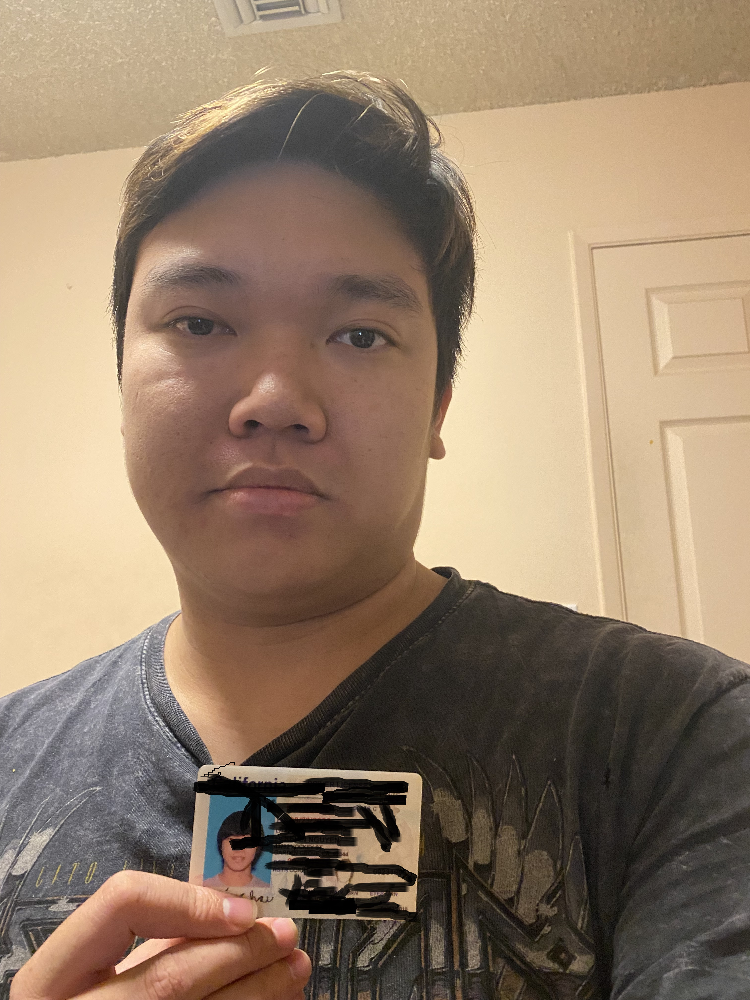

Kevin Chau

Kaychau95@gmail.com
Linked In
Summary
I am a late bloomer, aspiring to become a Software Engineer
Education
- BA Computer Science - CSU Dominguez Hills - May 2024
- AS Computer Science - Orange Coast College - May 2020
Work Experience
- STUDENT - CSU Dominguez Hills - Aug 2020-May 2024
- Learned React Native to build an E-Commerce IOS application, including JavaScript, HTML, and CSS. Firebase is used for the backend to store user login and data.
- Worked with a group using MySQL to build a Fridge Retail Store: searching our inventory (pricing, color, or brand), creating a sell receipt, and searching customer information.
- Used Entity Relationship diagram to aid in building MySQL database (use of primary keys and foreign keys).
- CASINO DEALER - Commerce Casino - Jun 2021-Aug2022
- Able to deal poker hands efficiently while maintaining social attention (Seat changes, welcoming new players, and monetary exchanges) with other 8 players and coworkers.
- Keep consistent high energy and patience through an 8 - 10 hour shift, handling customer's needs.
- RESTAURANT SERVER - Various Restaurants - May 2017-Mar 2020
- Manage a team environment (servers and bussers) and prioritize workload during a full house, decreasing queue times by 20% while adjusting to keep individual customers satisfied with service
- Developed an understanding of customer's needs through interactions and observations; additionally, increasing alcohol sales by 15% through my methods of upselling
Related Skills
- Teamplayer
- Willing to learn and take on challenges
- Fast learner and resourceful
- Quick and willing to adapt to change of environment
Certifications
- Working towards AWS Cloud Practitioner